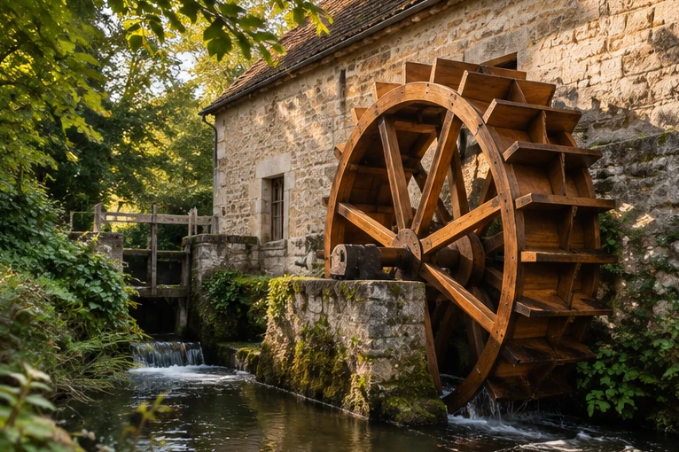

Savoir-faire · Pas-de-Calais
Rénovation du patrimoine ancien et restauration de moulins
La restauration de moulins à eau, de roues à aubes, de clochers et d’ouvrages patrimoniaux est l’une des spécialités historiques de l’entreprise.

Artisanat et exigence
Un savoir-faire singulier
Redonner vie aux ouvrages qui racontent un territoire.
L’entreprise s’est spécialisée dès les années 1990 dans la restauration de moulins à eau et de roues à aubes. Ces projets mobilisent l’étude du bâti ancien et des techniques de charpente et de menuiserie.
Moulins à eau et roues à aubesClochers et éléments de charpente patrimonialePonts et ouvrages d’art évoqués sur le site ancien
Échanger sur un ouvrage ancien ↗Réhabilitation
Adapter l’ancien à de nouveaux usages.
Le patrimoine ancien ne se limite pas aux monuments : le site évoque aussi la transformation de bâtiments communaux désaffectés, anciennes usines, gîtes, estaminets ou cabinets médicaux.
Cette approche associe lecture de l’existant, adaptation de l’ouvrage et respect des caractéristiques du bâtiment.
Découvrir les types d’ouvrages ↗